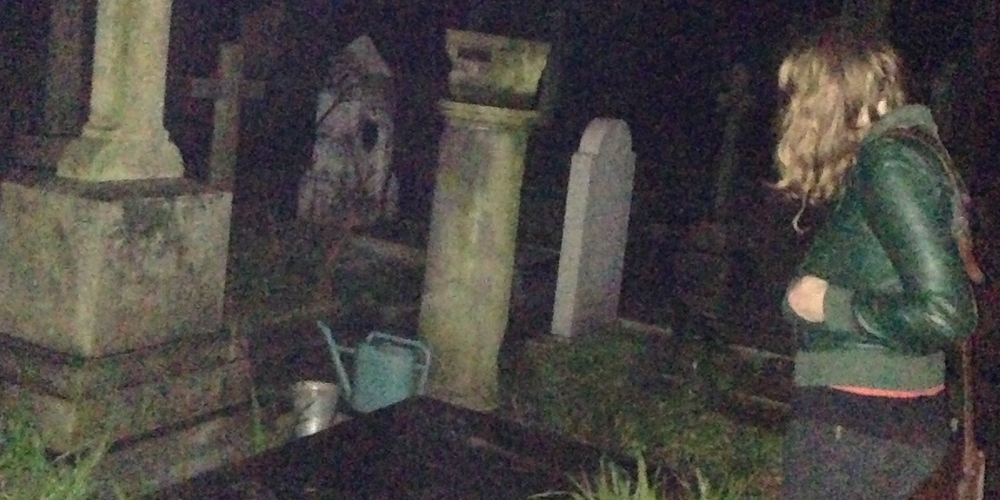

Eva and I lived in Rome and became friends along with many others who, like her, were there studying architecture in 2013. One night we went to an all-you-can-drink bar near Piramide. We had a blast and drank more than our money’s worth. We danced and avoided a guy pursuing Eva and finally decided to take our fun elsewhere.
A few blocks after leaving, we came upon an aqueduct wall with a cavernous entrance at the top which, energized as we were and seeking adventure, looked rather inviting to us, so we helped each other up onto a power box below and made our way onto the wall and into the cavernous passage. We immediately realized we had made an amazing decision. We were in an ancient (seeming, at least, and likely so) brick passageway, two or three stories above Rome, in a bubble of solitude and near silence, surrounded by the far off sounds of the inhabitants of the Eternal City enjoying their weekend.
I don’t remember now what we said to each other but joyful, nervous and anticipatory laughter and banter must have played a large part. We walked deeper into the passageway, away from the light of the city where we’d entered, and began to see the bars of a wrought iron gate ahead. We squeezed through, or opened it, and climbed onto another wall overlooking a cemetery, which I silently and excitedly realized was our next destination.
Once on the ground again, we each followed our own wanderings, reverently taking it all in: gravestones, some clearly very old, statues of angels and other monuments. The graveyard was on a slight hill and we could each see the other while we explored, wary of our legally dubious presence. Moss, marble, and soil smells set the scene, white marble reflected in the moonlight amid the darker greens and browns. Not many of the stones were legible, by a combination of age or darkness, but one was: “Here lies One Whose Name was writ in Water.” The stone to the right made it clear that the stone to the left marked the remains of John Keats. I was stunned, not knowing Keats’s story but only his name and bits about his work. The world felt small and remarkable in the beautiful way it does when making art out of life with the medium of spontaneity.
We walked around more and finally decided we had pushed our luck enough. We found a stone to step on, helped each other up, and climbed up over a wall on a side street, jumping down gracelessly. Amazed with our night, we parted ways and I walked home to Trastevere.